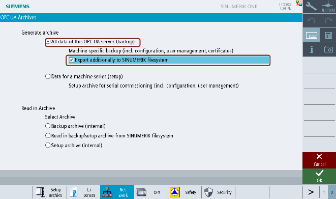
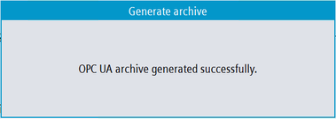
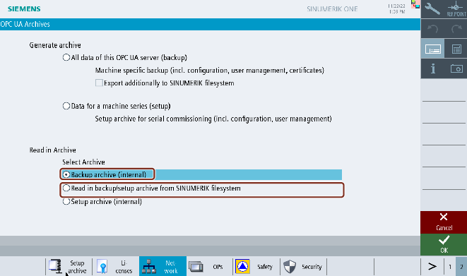
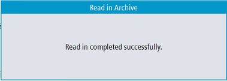
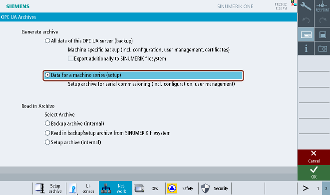
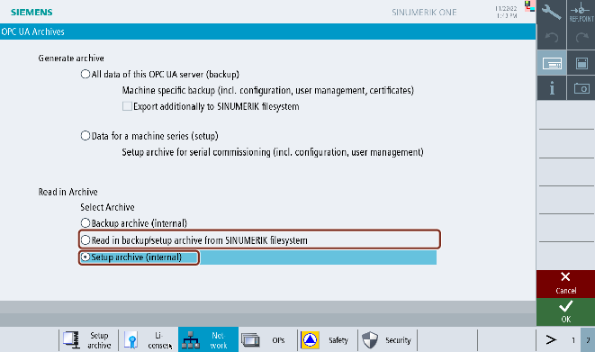

Overview
Archiving feature enables the user to generate a backup of OPC UA Server so that in case of need, all settings and data can be restored. Also, user can generate a setup archive for serial commissioning and update new machines with setup archive.
From Archiving screen user can:
-
Generate OPC UA Server backup archive (i.e, full archive)
-
Generate OPC UA Server setup archive for serial commissioning
-
Restore backup archive
-
Read in setup archive for serial commissioning
Prerequisite
OPC UA archive is only part of Operate archive, if the archive service in OPC UA has been done before. Therefore create an OPC UA backup first, before taking full backup of Operate.
OPC UA Server backup archiving
The user can generate a backup archive of OPC UA Server (including configuration, user management, models, and certificates) and restore it back when required. The OPC UA back up archive can only be restored on the same controller or the same SD card, since the server certificate is part of the backup.
Generating Archive
-
Press the "OPC UA" softkey.
-
Press the extended softkey as shown in the below image.

Softkey Extended
Note If the OPC UA server license is not active, then the extended softkey is disabled.
-
Press the "Archive" softkey.
-
The "OPC UA Archives" dialog will appear. Select "All data of this OPC UA server (backup)" radio button under "Generate archive".
Note The radio button "All data of this OPC UA server (backup)" is enabled by default only for manufacturer, service and user access levels.
Note If additionally, you want the backup file to be copied to the SINUMERIK filesystem, then select "Export additionally to SINUMERIK files system" check box. After Pressing "OK", a popup window appears. Select the location in the SINUMERIK filesystem where you want to save the backup file.
OPC UA Server generate backup archiving
-
Then press "OK". The popup window appears with message, "OPC UA archive generated successfully".
Generate archive popup
-
Press "OK". The backup file is saved automatically in the local folder (internal memory) and in the SINUMERIK file system as selected. The internal path for NCU will be "/card/user/sinumerik/hmi/cfg" and for PCU/IPC "C:\Program Files (x86)\Siemens\MotionControl/user/sinumerik/hmi/cfg".
Restoring backup archive
| Note |
|
| Note |
|
Restoring the backup archive does not open the firewall port for the OPC UA Server automatically. Due to security reasons, this port must be manually opened in the firewall. |
-
Select "Backup archive (internal)" radio button under "Read in Archive".
OPC UA Server restore backup archiving
In case, if you have saved and want to select the backup file from the SINUMERIK file system, then select "Read in backup/setup archive from SINUMERIK file system" radio button. After Pressing "OK", a popup window appears. Select the backup file from the SINUMERK file system.
-
Then Press "OK". With the valid input file, a popup window appears with message, "Read in completed successfully".
Read in archive success popup
-
Press "OK". The backup file is restored.
| Note |
|
The changes become effective only after the restart of the SINUMERIK Operate. |
OPC UA Server setup archiving for serial commissioning
The user generates a setup archive of OPC UA Server for serial commissioning (including configuration, user management, and models) and update new machines with setup archive.
Generating Archive
-
Select "Data for a machine series (setup)" radio button under "Generate archive".
Note This option is enabled only with manufacturer’s access levels.
OPC UA Server generate setup archiving for serial commissioning
-
Press "OK". A popup window appears.
-
Select the location in the SINUMERIK file system where you want to save the setup file.
-
Then press "OK". The popup window appears with message, "OPC UA archive generated successfully".
Generate archive success popup
-
Press "OK". The setup file is saved in the USB/network share as selected.
Setup archive
-
Select "Read in backup/setup archive from SINUMERIK file system" radio button under "Read in Archive".
OPC UA Server setup archiving for serial commissioning
In case, if you have saved and want to select the setup file from local folder (internal memory), then select "Setup archive (internal)" radio button. The internal path for NCU will be "/card/user/sinumerik/hmi/cfg" and for PCU/IPC "C:\Program Files (x86)\Siemens\MotionControl/user/sinumerik/hmi/cfg".
Note The "Setup archive (internal)" option is enabled only with manufacturer’s access levels.
-
Press "OK". A popup window appears.

Setup archive USB_Networkshare popup
-
Select the setup file from the SINUMERIK file system. Then Press "OK".
-
With the valid input file, a popup window appears with message, "Read in completed successfully".
Read in archive success popup
-
Press "OK". The setup archive is completed.
| Note |
|
The changes become effective only after the restart of the SINUMERIK Operate. |
Possible scenarios and error messages
Sl no. | Selection | Scenario description | Error message |
1 | Generate backup archive | Generation of any archive, if completed without any issues. | OPC UA archive generated successfully. |
OR | |||
Generate setup archive | |||
2 | Generate backup archive (internal memory) | If there is no sufficient memory available. | Insufficient memory on IPC/NCU. |
3 | Generate backup archive (on SINUMERIK file system) | If there is no sufficient memory available. | Insufficient file system memory |
OR | |||
Generate setup archive (on SINUMERIK file system) | |||
4 | Generate backup archive (on SINUMERIK file system) | If the selected location is write protected or not accessible. | No write permission on the selected medium. |
OR | |||
Generate setup archive (on SINUMERIK file system) | |||
5 | Generate backup archive (on SINUMERIK file system) | If the selected location is write protected or not accessible. | Access to drive is not possible. |
OR | |||
Generate setup archive (on SINUMERIK file system) | |||
6 | Read in Backup archive | No valid OPC UA archive file is found in internal memory. | No OPC UA archive is available on internal memory |
Or | |||
Read in Setup archive | |||
7 | Read in Backup archive | No error in reading in file. | Read in completed successfully. |
Or | |||
Read in Setup archive | |||
8 | Read in Backup archive | If the selected file is not a valid OPC UA Archive or the file is tampered by editing. | Read in failed. Invalid file. |
Or | |||
Read in Setup archive | |||
9 | Read in Backup archive (external memory) | If backup archive is not from the same machine | Read in failed. Backup Archive is generated on different Sinumerik device. |